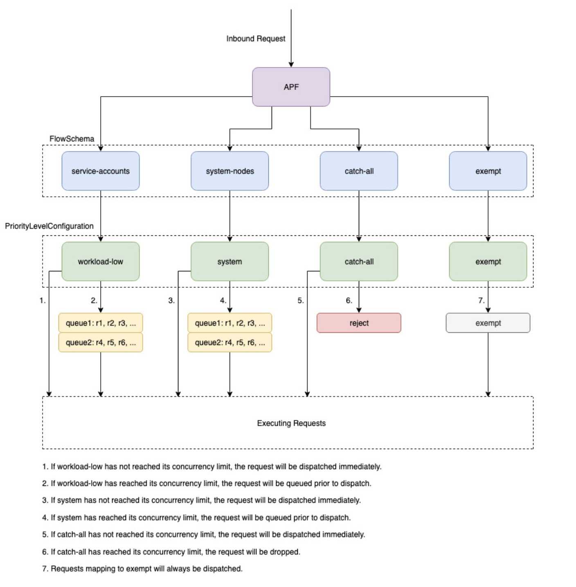

We've Moved to the AWS Docs! 🚀
This content has been updated and relocated to improve your experience. Please visit our new site for the latest version: AWS EKS Best Practices Guide on the AWS Docs
Bookmarks and links will continue to work, but we recommend updating them for faster access in the future.
Kubernetes Control Plane¶
The Kubernetes control plane consists of the Kubernetes API Server, Kubernetes Controller Manager, Scheduler and other components that are required for Kubernetes to function. Scalability limits of these components are different depending on what you're running in the cluster, but the areas with the biggest impact to scaling include the Kubernetes version, utilization, and individual Node scaling.
Use EKS 1.24 or above¶
EKS 1.24 introduced a number of changes and switches the container runtime to containerd instead of docker. Containerd helps clusters scale by increasing individual node performance by limiting container runtime features to closely align with Kubernetes' needs. Containerd is available in every supported version of EKS and if you would like to switch to containerd in versions prior to 1.24 please use the --container-runtime bootstrap flag.
Limit workload and node bursting¶
Attention
To avoid reaching API limits on the control plane you should limit scaling spikes that increase cluster size by double digit percentages at a time (e.g. 1000 nodes to 1100 nodes or 4000 to 4500 pods at once).
The EKS control plane will automatically scale as your cluster grows, but there are limits on how fast it will scale. When you first create an EKS cluster the Control Plane will not immediately be able to scale to hundreds of nodes or thousands of pods. To read more about how EKS has made scaling improvements see this blog post.
Scaling large applications requires infrastructure to adapt to become fully ready (e.g. warming load balancers). To control the speed of scaling make sure you are scaling based on the right metrics for your application. CPU and memory scaling may not accurately predict your application constraints and using custom metrics (e.g. requests per second) in Kubernetes Horizontal Pod Autoscaler (HPA) may be a better scaling option.
To use a custom metric see the examples in the Kubernetes documentation. If you have more advanced scaling needs or need to scale based on external sources (e.g. AWS SQS queue) then use KEDA for event based workload scaling.
Scale nodes and pods down safely¶
Replace long running instances¶
Replacing nodes regularly keeps your cluster healthy by avoiding configuration drift and issues that only happen after extended uptime (e.g. slow memory leaks). Automated replacement will give you good process and practices for node upgrades and security patching. If every node in your cluster is replaced regularly then there is less toil required to maintain separate processes for ongoing maintenance.
Use Karpenter's time to live (TTL) settings to replace instances after they've been running for a specified amount of time. Self managed node groups can use the max-instance-lifetime setting to cycle nodes automatically. Managed node groups do not currently have this feature but you can track the request here on GitHub.
Remove underutilized nodes¶
You can remove nodes when they have no running workloads using the scale down threshold in the Kubernetes Cluster Autoscaler with the --scale-down-utilization-threshold or in Karpenter you can use the ttlSecondsAfterEmpty provisioner setting.
Use pod disruption budgets and safe node shutdown¶
Removing pods and nodes from a Kubernetes cluster requires controllers to make updates to multiple resources (e.g. EndpointSlices). Doing this frequently or too quickly can cause API server throttling and application outages as changes propogate to controllers. Pod Disruption Budgets are a best practice to slow down churn to protect workload availability as nodes are removed or rescheduled in a cluster.
Use Client-Side Cache when running Kubectl¶
Using the kubectl command inefficiently can add additional load to the Kubernetes API Server. You should avoid running scripts or automation that uses kubectl repeatedly (e.g. in a for loop) or running commands without a local cache.
kubectl has a client-side cache that caches discovery information from the cluster to reduce the amount of API calls required. The cache is enabled by default and is refreshed every 10 minutes.
If you run kubectl from a container or without a client-side cache you may run into API throttling issues. It is recommended to retain your cluster cache by mounting the --cache-dir to avoid making uncessesary API calls.
Disable kubectl Compression¶
Disabling kubectl compression in your kubeconfig file can reduce API and client CPU usage. By default the server will compress data sent to the client to optimize network bandwidth. This adds CPU load on the client and server for every request and disabling compression can reduce the overhead and latency if you have adequate bandwidth. To disable compression you can use the --disable-compression=true flag or set disable-compression: true in your kubeconfig file.
Shard Cluster Autoscaler¶
The Kubernetes Cluster Autoscaler has been tested to scale up to 1000 nodes. On a large cluster with more than 1000 nodes, it is recommended to run multiple instances of the Cluster Autoscaler in shard mode. Each Cluster Autoscaler instance is configured to scale a set of node groups. The following example shows 2 cluster autoscaling configurations that are configured to each scale 4 node groups.
ClusterAutoscaler-1
autoscalingGroups:
- name: eks-core-node-grp-20220823190924690000000011-80c1660e-030d-476d-cb0d-d04d585a8fcb
maxSize: 50
minSize: 2
- name: eks-data_m1-20220824130553925600000011-5ec167fa-ca93-8ca4-53a5-003e1ed8d306
maxSize: 450
minSize: 2
- name: eks-data_m2-20220824130733258600000015-aac167fb-8bf7-429d-d032-e195af4e25f5
maxSize: 450
minSize: 2
- name: eks-data_m3-20220824130553914900000003-18c167fa-ca7f-23c9-0fea-f9edefbda002
maxSize: 450
minSize: 2
ClusterAutoscaler-2
autoscalingGroups:
- name: eks-data_m4-2022082413055392550000000f-5ec167fa-ca86-6b83-ae9d-1e07ade3e7c4
maxSize: 450
minSize: 2
- name: eks-data_m5-20220824130744542100000017-02c167fb-a1f7-3d9e-a583-43b4975c050c
maxSize: 450
minSize: 2
- name: eks-data_m6-2022082413055392430000000d-9cc167fa-ca94-132a-04ad-e43166cef41f
maxSize: 450
minSize: 2
- name: eks-data_m7-20220824130553921000000009-96c167fa-ca91-d767-0427-91c879ddf5af
maxSize: 450
minSize: 2
API Priority and Fairness¶

Overview¶
To protect itself from being overloaded during periods of increased requests, the API Server limits the number of inflight requests it can have outstanding at a given time. Once this limit is exceeded, the API Server will start rejecting requests and return a 429 HTTP response code for "Too Many Requests" back to clients. The server dropping requests and having clients try again later is preferable to having no server-side limits on the number of requests and overloading the control plane, which could result in degraded performance or unavailability.
The mechanism used by Kubernetes to configure how these inflights requests are divided among different request types is called API Priority and Fairness. The API Server configures the total number of inflight requests it can accept by summing together the values specified by the --max-requests-inflight and --max-mutating-requests-inflight flags. EKS uses the default values of 400 and 200 requests for these flags, allowing a total of 600 requests to be dispatched at a given time. However, as it scales the control-plane to larger sizes in response to increased utilization and workload churn, it correspondingly increases the inflight request quota all the way till 2000 (subject to change). APF specifies how these inflight request quota is further sub-divided among different request types. Note that EKS control planes are highly available with at least 2 API Servers registered to each cluster. This means the total number of inflight requests your cluster can handle is twice (or higher if horizontally scaled out further) the inflight quota set per kube-apiserver. This amounts to several thousands of requests/second on the largest EKS clusters.
Two kinds of Kubernetes objects, called PriorityLevelConfigurations and FlowSchemas, configure how the total number of requests is divided between different request types. These objects are maintained by the API Server automatically and EKS uses the default configuration of these objects for the given Kubernetes minor version. PriorityLevelConfigurations represent a fraction of the total number of allowed requests. For example, the workload-high PriorityLevelConfiguration is allocated 98 out of the total of 600 requests. The sum of requests allocated to all PriorityLevelConfigurations will equal 600 (or slightly above 600 because the API Server will round up if a given level is granted a fraction of a request). To check the PriorityLevelConfigurations in your cluster and the number of requests allocated to each, you can run the following command. These are the defaults on EKS 1.24:
$ kubectl get --raw /metrics | grep apiserver_flowcontrol_request_concurrency_limit
apiserver_flowcontrol_request_concurrency_limit{priority_level="catch-all"} 13
apiserver_flowcontrol_request_concurrency_limit{priority_level="global-default"} 49
apiserver_flowcontrol_request_concurrency_limit{priority_level="leader-election"} 25
apiserver_flowcontrol_request_concurrency_limit{priority_level="node-high"} 98
apiserver_flowcontrol_request_concurrency_limit{priority_level="system"} 74
apiserver_flowcontrol_request_concurrency_limit{priority_level="workload-high"} 98
apiserver_flowcontrol_request_concurrency_limit{priority_level="workload-low"} 245
The second type of object are FlowSchemas. API Server requests with a given set of properties are classified under the same FlowSchema. These properties include either the authenticated user or attributes of the request, such as the API group, namespace, or resource. A FlowSchema also specifies which PriorityLevelConfiguration this type of request should map to. The two objects together say, "I want this type of request to count towards this share of inflight requests." When a request hits the API Server, it will check each of its FlowSchemas until it finds one that matches all the required properties. If multiple FlowSchemas match a request, the API Server will choose the FlowSchema with the smallest matching precedence which is specified as a property in the object.
The mapping of FlowSchemas to PriorityLevelConfigurations can be viewed using this command:
$ kubectl get flowschemas
NAME PRIORITYLEVEL MATCHINGPRECEDENCE DISTINGUISHERMETHOD AGE MISSINGPL
exempt exempt 1 <none> 7h19m False
eks-exempt exempt 2 <none> 7h19m False
probes exempt 2 <none> 7h19m False
system-leader-election leader-election 100 ByUser 7h19m False
endpoint-controller workload-high 150 ByUser 7h19m False
workload-leader-election leader-election 200 ByUser 7h19m False
system-node-high node-high 400 ByUser 7h19m False
system-nodes system 500 ByUser 7h19m False
kube-controller-manager workload-high 800 ByNamespace 7h19m False
kube-scheduler workload-high 800 ByNamespace 7h19m False
kube-system-service-accounts workload-high 900 ByNamespace 7h19m False
eks-workload-high workload-high 1000 ByUser 7h14m False
service-accounts workload-low 9000 ByUser 7h19m False
global-default global-default 9900 ByUser 7h19m False
catch-all catch-all 10000 ByUser 7h19m False
PriorityLevelConfigurations can have a type of Queue, Reject, or Exempt. For types Queue and Reject, a limit is enforced on the maximum number of inflight requests for that priority level, however, the behavior differs when that limit is reached. For example, the workload-high PriorityLevelConfiguration uses type Queue and has 98 requests available for use by the controller-manager, endpoint-controller, scheduler,eks related controllers and from pods running in the kube-system namespace. Since type Queue is used, the API Server will attempt to keep requests in memory and hope that the number of inflight requests drops below 98 before these requests time out. If a given request times out in the queue or if too many requests are already queued, the API Server has no choice but to drop the request and return the client a 429. Note that queuing may prevent a request from receiving a 429, but it comes with the tradeoff of increased end-to-end latency on the request.
Now consider the catch-all FlowSchema that maps to the catch-all PriorityLevelConfiguration with type Reject. If clients reach the limit of 13 inflight requests, the API Server will not exercise queuing and will drop the requests instantly with a 429 response code. Finally, requests mapping to a PriorityLevelConfiguration with type Exempt will never receive a 429 and always be dispatched immediately. This is used for high-priority requests such as healthz requests or requests coming from the system:masters group.
Monitoring APF and Dropped Requests¶
To confirm if any requests are being dropped due to APF, the API Server metrics for apiserver_flowcontrol_rejected_requests_total can be monitored to check the impacted FlowSchemas and PriorityLevelConfigurations. For example, this metric shows that 100 requests from the service-accounts FlowSchema were dropped due to requests timing out in workload-low queues:
% kubectl get --raw /metrics | grep apiserver_flowcontrol_rejected_requests_total
apiserver_flowcontrol_rejected_requests_total{flow_schema="service-accounts",priority_level="workload-low",reason="time-out"} 100
To check how close a given PriorityLevelConfiguration is to receiving 429s or experiencing increased latency due to queuing, you can compare the difference between the concurrency limit and the concurrency in use. In this example, we have a buffer of 100 requests.
% kubectl get --raw /metrics | grep 'apiserver_flowcontrol_request_concurrency_limit.*workload-low'
apiserver_flowcontrol_request_concurrency_limit{priority_level="workload-low"} 245
% kubectl get --raw /metrics | grep 'apiserver_flowcontrol_request_concurrency_in_use.*workload-low'
apiserver_flowcontrol_request_concurrency_in_use{flow_schema="service-accounts",priority_level="workload-low"} 145
To check if a given PriorityLevelConfiguration is experiencing queuing but not necessarily dropped requests, the metric for apiserver_flowcontrol_current_inqueue_requests can be referenced:
% kubectl get --raw /metrics | grep 'apiserver_flowcontrol_current_inqueue_requests.*workload-low'
apiserver_flowcontrol_current_inqueue_requests{flow_schema="service-accounts",priority_level="workload-low"} 10
Other useful Prometheus metrics include:
- apiserver_flowcontrol_dispatched_requests_total
- apiserver_flowcontrol_request_execution_seconds
- apiserver_flowcontrol_request_wait_duration_seconds
See the upstream documentation for a complete list of APF metrics.
Preventing Dropped Requests¶
Prevent 429s by changing your workload¶
When APF is dropping requests due to a given PriorityLevelConfiguration exceeding its maximum number of allowed inflight requests, clients in the affected FlowSchemas can decrease the number of requests executing at a given time. This can be accomplished by reducing the total number of requests made over the period where 429s are occurring. Note that long-running requests such as expensive list calls are especially problematic because they count as an inflight request for the entire duration they are executing. Reducing the number of these expensive requests or optimizing the latency of these list calls (for example, by reducing the number of objects fetched per request or switching to using a watch request) can help reduce the total concurrency required by the given workload.
Prevent 429s by changing your APF settings¶
Warning
Only change default APF settings if you know what you are doing. Misconfigured APF settings can result in dropped API Server requests and significant workload disruptions.
One other approach for preventing dropped requests is changing the default FlowSchemas or PriorityLevelConfigurations installed on EKS clusters. EKS installs the upstream default settings for FlowSchemas and PriorityLevelConfigurations for the given Kubernetes minor version. The API Server will automatically reconcile these objects back to their defaults if modified unless the following annotation on the objects is set to false:
At a high-level, APF settings can be modified to either:
- Allocate more inflight capacity to requests you care about.
- Isolate non-essential or expensive requests that can starve capacity for other request types.
This can be accomplished by either changing the default FlowSchemas and PriorityLevelConfigurations or by creating new objects of these types. Operators can increase the values for assuredConcurrencyShares for the relevant PriorityLevelConfigurations objects to increase the fraction of inflight requests they are allocated. Additionally, the number of requests that can be queued at a given time can also be increased if the application can handle the additional latency caused by requests being queued before they are dispatched.
Alternatively, new FlowSchema and PriorityLevelConfigurations objects can be created that are specific to the customer's workload. Be aware that allocating more assuredConcurrencyShares to either existing PriorityLevelConfigurations or to new PriorityLevelConfigurations will cause the number of requests that can be handled by other buckets to be reduced as the overall limit will stay as 600 inflight per API Server.
When making changes to APF defaults, these metrics should be monitored on a non-production cluster to ensure changing the settings do not cause unintended 429s:
- The metric for
apiserver_flowcontrol_rejected_requests_totalshould be monitored for all FlowSchemas to ensure that no buckets start to drop requests. - The values for
apiserver_flowcontrol_request_concurrency_limitandapiserver_flowcontrol_request_concurrency_in_useshould be compared to ensure that the concurrency in use is not at risk for breaching the limit for that priority level.
One common use-case for defining a new FlowSchema and PriorityLevelConfiguration is for isolation. Suppose we want to isolate long-running list event calls from pods to their own share of requests. This will prevent important requests from pods using the existing service-accounts FlowSchema from receiving 429s and being starved of request capacity. Recall that the total number of inflight requests is finite, however, this example shows APF settings can be modified to better divide request capacity for the given workload:
Example FlowSchema object to isolate list event requests:
apiVersion: flowcontrol.apiserver.k8s.io/v1beta1
kind: FlowSchema
metadata:
name: list-events-default-service-accounts
spec:
distinguisherMethod:
type: ByUser
matchingPrecedence: 8000
priorityLevelConfiguration:
name: catch-all
rules:
- resourceRules:
- apiGroups:
- '*'
namespaces:
- default
resources:
- events
verbs:
- list
subjects:
- kind: ServiceAccount
serviceAccount:
name: default
namespace: default
- This FlowSchema captures all list event calls made by service accounts in the default namespace.
- The matching precedence 8000 is lower than the value of 9000 used by the existing service-accounts FlowSchema so these list event calls will match list-events-default-service-accounts rather than service-accounts.
- We're using the catch-all PriorityLevelConfiguration to isolate these requests. This bucket only allows 13 inflight requests to be used by these long-running list event calls. Pods will start to receive 429s as soon they try to issue more than 13 of these requests concurrently.
Retrieving resources in the API server¶
Getting information from the API server is an expected behavior for clusters of any size. As you scale the number of resources in the cluster the frequency of requests and volume of data can quickly become a bottleneck for the control plane and will lead to API latency and slowness. Depending on the severity of the latency it cause unexpected downtime if you are not careful.
Being aware of what you are requesting and how often are the first steps to avoiding these types of problems. Here is guidance to limit the volume of queries based on the scaling best practices. Suggestions in this section are provided in order starting with the options that are known to scale the best.
Use Shared Informers¶
When building controllers and automation that integrate with the Kubernetes API you will often need to get information from Kubernetes resources. If you poll for these resources regularly it can cause a significant load on the API server.
Using an informer from the client-go library will give you benefits of watching for changes to the resources based on events instead of polling for changes. Informers further reduce the load by using shared cache for the events and changes so multiple controllers watching the same resources do not add additional load.
Controllers should avoid polling cluster wide resources without labels and field selectors especially in large clusters. Each un-filtered poll requires a lot of unnecessary data to be sent from etcd through the API server to be filtered by the client. By filtering based on labels and namespaces you can reduce the amount of work the API server needs to perform to fullfil the request and data sent to the client.
Optimize Kubernetes API usage¶
When calling the Kubernetes API with custom controllers or automation it's important that you limit the calls to only the resources you need. Without limits you can cause unneeded load on the API server and etcd.
It is recommended that you use the watch argument whenever possible. With no arguments the default behavior is to list objects. To use watch instead of list you can append ?watch=true to the end of your API request. For example, to get all pods in the default namespace with a watch use:
If you are listing objects you should limit the scope of what you are listing and the amount of data returned. You can limit the returned data by adding limit=500 argument to requests. The fieldSelector argument and /namespace/ path can be useful to make sure your lists are as narrowly scoped as needed. For example, to list only running pods in the default namespace use the following API path and arguments.
Or list all pods that are running with:
Another option to limit watch calls or listed objects is to use resourceVersions which you can read about in the Kubernetes documentation. Without a resourceVersion argument you will receive the most recent version available which requires an etcd quorum read which is the most expensive and slowest read for the database. The resourceVersion depends on what resources you are trying to query and can be found in the metadata.resourseVersion field. This is also recommended in case of using watch calls and not just list calls
There is a special resourceVersion=0 available that will return results from the API server cache. This can reduce etcd load but it does not support pagination.